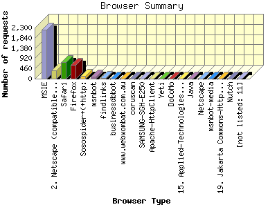

The Browser Summary identifies the most popular web browsers used to visit
this site.
Browsers are broken down by recognized categories such as
Netscape Navigator/Communicator, Microsoft Internet Explorer, WebTV, Opera
and the like. Within each category is also a subgroup by version number
such as 'MSIE 5.0' or 'Netscape 4.5'.
This report shows the first 20 results by requests for pages. This report is sorted by number of requests for pages.

| Browser Type | Number of requests | Number of page requests | |
|---|---|---|---|
| 1. | MSIE | 2,206 | 317 |
| MSIE/8 | 1,173 | 152 | |
| MSIE/9 | 730 | 94 | |
| MSIE/7 | 179 | 40 | |
| MSIE/6 | 122 | 29 | |
| MSIE/5 | 1 | 1 | |
| 2. | Netscape (compatible) | 360 | 247 |
| 3. | Safari | 750 | 116 |
| Safari/534 | 197 | 29 | |
| Safari/7534 | 178 | 25 | |
| Safari/535 | 174 | 25 | |
| Safari/536 | 131 | 17 | |
| Safari/6531 | 14 | 14 | |
| Safari/533 | 44 | 4 | |
| Safari/6533 | 12 | 2 | |
| 4. | Firefox | 636 | 100 |
| Firefox/12 | 414 | 54 | |
| Firefox/3 | 110 | 33 | |
| Firefox/11 | 58 | 6 | |
| Firefox/9 | 25 | 3 | |
| Firefox/8 | 15 | 2 | |
| Firefox/4 | 1 | 1 | |
| Firefox/7 | 11 | 1 | |
| 5. | Sosospider+(+http: | 135 | 98 |
| Sosospider+(+http://help | 135 | 98 | |
| 6. | msnbot | 91 | 91 |
| msnbot/2 | 91 | 91 | |
| 7. | findlinks | 34 | 34 |
| findlinks/2 | 34 | 34 | |
| 8. | businessdbbot | 15 | 15 |
| businessdbbot/v1 | 15 | 15 | |
| 9. | www.webwombat.com.au | 6 | 6 |
| 10. | coruscan | 5 | 5 |
| coruscan/Nutch-1 | 5 | 5 | |
| 11. | SAMSUNG-SGH-E250 | 4 | 4 |
| SAMSUNG-SGH-E250/1 | 4 | 4 | |
| 12. | Apache-HttpClient | 4 | 4 |
| Apache-HttpClient/4 | 4 | 4 | |
| 13. | Yeti | 8 | 4 |
| Yeti/1 | 8 | 4 | |
| 14. | DoCoMo | 3 | 3 |
| DoCoMo/2 | 3 | 3 | |
| 15. | Applied-Technologies-Inc-Spider | 3 | 3 |
| Applied-Technologies-Inc-Spider/Nutch-1 | 3 | 3 | |
| 16. | Java | 2 | 2 |
| Java/1 | 2 | 2 | |
| 17. | Netscape | 2 | 2 |
| Netscape/4 | 1 | 1 | |
| Netscape/3 | 1 | 1 | |
| 18. | msnbot-media | 4 | 2 |
| msnbot-media/1 | 4 | 2 | |
| 19. | Jakarta Commons-HttpClient | 2 | 2 |
| Jakarta Commons-HttpClient/3 | 2 | 2 | |
| 20. | Nutch | 1 | 1 |
| Nutch/Nutch-1 | 1 | 1 | |
| [not listed: 11] | 13 | 9 | |
This report was generated on May 30, 2012 07:23.
Report time frame May 1, 2012 01:44 to May 29, 2012 20:49.
| Web statistics report produced by: analog 6.0 / Report Magic 2.21 |